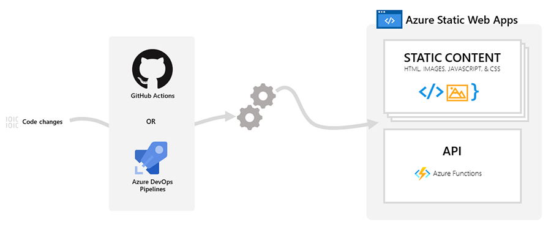

Google Codelabs is a tool for authoring and publishing interactive tutorials online - in three steps:
In this tutorial, we'll explore Azure Static Web Apps (SWA) as our deployment option. Read this overview to understand how Static Web Apps differs from traditional monolithic web server deployment approaches.
We'll use Visual Studio Code with this VS Code Extension to reduce our Static Web Apps setup to just a few clicks. Once done, this setups a GitHub Actions workflow that automatically rebuilds and redeploys the codelab content with every change to the repository. The figure below gives you a high-level view of what that looks like.

Resources:
This section of the codelab was adapted from the Create a Codelab tutorial and tested in a macOS development device. You can refer to this guidance for other device platforms. Setup involves three steps:
Install Go if you don't have it. You can use Homebrew if you have it on mac
$ brew install go
Validate the install by checking the version. You should see something like this:
$ go version
go version go1.18 darwin/amd64
Below is what I set on mac, but instructions are here for other OS options
$ export GOPATH=$HOME/Go
$ export GOROOT=/usr/local/opt/go/libexec
$ export PATH=$PATH:$GOPATH/bin
$ export PATH=$PATH:$GOROOT/bin
Use this command (instead of the go get option that was previously referenced). Validate your installation by using claat -h to view the list of supported options. Once set, you can move on to creating your first codelab!
$ go install github.com/googlecodelabs/tools/claat@latest
Since the codelab is in Markdown any text editor or IDE will do.
I am using Visual Studio Code because it is my preferred editor, but also because it will simplify our Azure Static Web Apps setup later. Here are three things you can do to get ready for this exercise:
Have VS Code setup?
Open a new markdown file as shown below, to author your first tutorial!
$ code codelabs-on-swa.md
Here is the recommended set of metadata (key-value pairs) you need to define in the front-matter of your markdown file.
author: <Author Name>
summary: <Summary of your codelab that is human readable>
id: <unique-codelab-identifier<>
categories: <codelab,markdown,swa>
environments: <Web>
status: <Published>
feedback link: <A link where users can go to provide feedback (Maybe the git repo)>
analytics account: <Google Analytics ID>
Copy the above section into your empty Markdown document:
< > contents with relevant values for your tutorial.You can add any key-value pairs you want to - however, only the following are interpreted by the Codelabs renderer meaningfully as described below:
Summary | A human-readable summary of the codelab. Defaults to blank. | |
Id | An identifier composed of lowercase letters ideally describing the content of the codelab. This field should be unique among codelabs. | |
Categories | A comma-separated list of the topics the codelab covers. | |
Environments | A list of environments the codelab should be discoverable in. | |
Status | The publication status of the codelab. Valid values are: | |
Feedback Link | A link to send users to if they wish to leave feedback on the codelab | |
Analytics Account | A Google Analytics ID to include with all codelab pages | |
First, add your title using a single ‘#' character
# Title of codelab
Then for each section use Header 2 or ‘##' and specify an optional duration (in hh:mm:ss format) immediately beneath it. This information will be used to compute and display remaining time to complete the tutorial when the reader reaches that section.
Example
## Section 1
Duration: 0:10:00
## Section 2
Duration: 0:05:00
Write the body of your section content using supported Markdown formats. You can use these to create lists, add embed images or even iFrames.
For instance, the Markdown snippet below:

will be rendered as the content below:
Try to keep each section short and focused on a single task.
Once your Markdown-driven content is complete, export it to static content files using the following command:
$ claat export codelabs-on-swa.md
ok codelabs-on-swa
You can preview the generated codelab webpage using this command in the same directory:
$ claat serve
This should automatically launch a browser - else open one manually to http://localhost:9090 - and display a list of subfolders. Click on the subfolder corresponding to the "id" value in your codelab header. You should be looking at your rendered codelab!.
The claat export command creates static files that represent the codelab. Let's see what those look like - we should have a codelabs.json file providing configuration information, an img directory with static image assets (if any) and an index.html which has the main website content.
$ ls codelabs-on-swa
codelab.json img index.html
Note that this process sets us up with a default Google Analytics ID. You should be able to modify this to reflect your own tracking needs - make sure you update both the JSON and HTML files accordingly.
Let's setup our code repsitory to use Azure Static Web Apps for automated deployment.
codelabs-on-swa ("id" in header) for your app_location."" for your api_location (nothing integrated yet)codelabs-on-swa for your output_locationThe last step is key since we're currently setting up GitHub Actions to automate the deploy step, but using manual claat commands to create and commit the build step. As a result the app_location and output_location values are identical.
Once configured, let the SWA Extension setup complete - you should see a notification in your VS Code window indicating that the site was successfully deployed to Azure Static Web Apps - along with a published URL that you can visit to see the site in action.
Simply modify the core Markdown file and run the claat export command to rebuild the static files. Commit changes to trigger the GitHub Action which will automatically redeploy the site for you. Later, we can explore setting up the claat commands via GitHub Actions to automate the build steps as well.
If you'd like to create your own landing page for codelabs, like this one, there is a tool to do that as well! Check it out here: CodeLabs Site